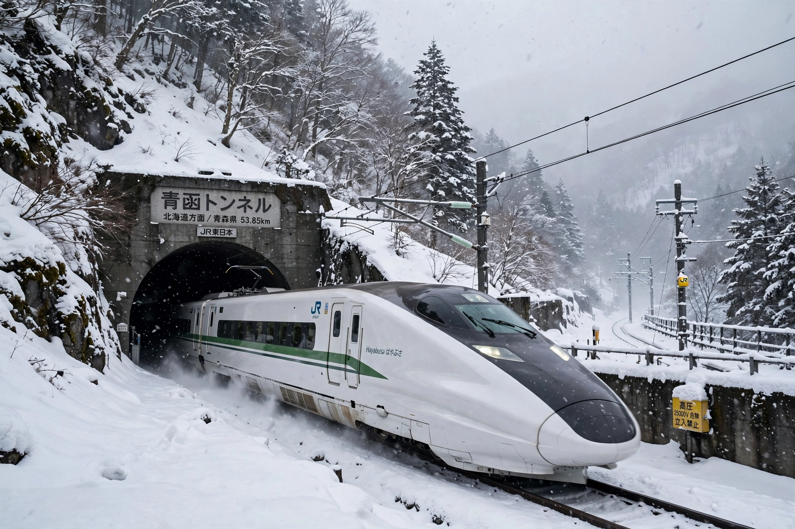

Seikan Tunnel
From Wikipedia, the free encyclopedia

Seikan (image regenerated from memory)
The Seikan Tunnel (青函トンネル) is a dual-gauge railway tunnel in Japan with a 23.3 km undersea section beneath the Tsugaru Strait, linking Honshu (Aomori) with Hokkaido (Hakodate). At 53.85 km overall it was the world\'s longest railway tunnel until the Gotthard Base Tunnel (2016), and remains the longest undersea rail tunnel section. Opened in 1988 for conventional trains, it now carries Shinkansen services at reduced in-tunnel speeds alongside freight on shared tracks.
Motivation and construction
The loss of the ferry Tōya Maru in a 1954 typhoon (1,155 deaths) spurred the project, as did Hokkaido\'s development. Construction (1971–1985, pilot and service tunnels first) fought high-pressure water inflows in fractured undersea rock; 34 workers died. The tunnel lies 140 m below the seabed and 240 m below sea level at its deepest.
Operation
Through trains began in 1988, ending the Seikan ferry\'s passenger role (it survives as a vehicle ferry on a different route). Shinkansen Hayabusa services (from 2016) share the tunnel with freight, initially limited to 140 km/h in the tunnel (raised to 160 km/h) to protect freight trains from pressure waves — a continuing constraint on Hokkaido Shinkansen speeds.
Legacy
The tunnel cost about ¥1.1 trillion and transformed Hokkaido access; the Shinkansen extension to Sapporo (planned, delayed to the late 2030s) will complete its high-speed role.